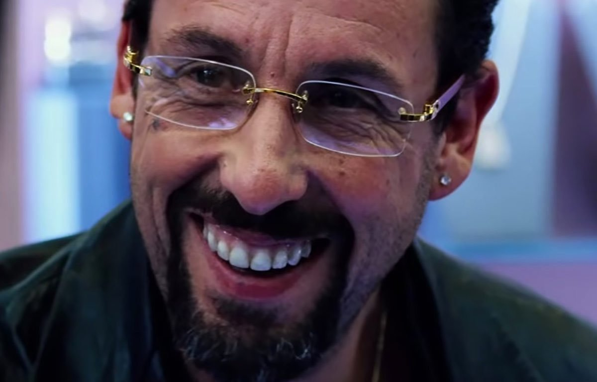

Uncut Gems: lo mejor de Adam Sandler desde Punch Drunk Love.
Uncut Gems es una de las mejores cintas de los últimos años y merecía estar nominada a los Oscar. Los hermanos Safdie y Adam Sandler se llevó varios galardones a casa por esta obra maestra de crimen y adicción pero por alguna razón fue ignorada por los pero por alguna razón fue ignorada por los Oscar.
Sin embargo, eso no significa que nosotros debamos pasarla por alto. Es una brillante película que muestra el rango oculto de Adam Sandler, y es un ejemplo del cine que todos deberían hacer actualmente.
La obra se enfoca en Howard, un dueño de una tienda de joyas con actividades ilegales, quien es adicto a las apuestas y que, para pagar deudas, hace más apuestas, a sabiendas de sus cobradores. Sin embargo, la cinta es mucho más que eso. Por esto tienes que verla:
Cine de Exceso
Grotesco, sucio, asfixiante, desesperante. Posiblemente los Safdie lograron crear una de las más grandes obras maestras del cine de exceso.El diálogo es rápido, la historia se mueve así, la fotografía nos tiene colgando de un hilo y básicamente ese ritmo es lo que la hace tan buena e hipnotizante. El suspenso proviene de que Howard es un personaje tan caótico. No importa cuántas veces tenga suerte, nunca es suficiente. Tiene que ir por el premio más grande, la victoria más grande. Justo cuando crees que sabes lo que hará Howard, cambia las cosas.
Actuacion de Adam Sandler
Los Premios de la Academia pueden haberlo rechazado , pero una vez más, Adam Sandler demuestra que es más que un actor cómico que a veces hace voces graciosas. Sandler muestra las muchas dimensiones de Howard a través de la expresión facial, el diálogo y sus interacciones con los demás. Aunque al inicio parece bastante sencillo, con cada escena vemos qué tan dentro del personaje se encuentra y cómo, en las cosas más sutiles, demuestra su deseo por más. Alejado de sus otros dramas como Funny People o Punch Drunk Love, finalmente se atreve a entregar todo de si, e incluso para la audiencia resulta exhaustivo mirarlo.
{kind=link}
Cruza géneros cinematográficos
Uncut Gems se divide en varios géneros cinematográficos diferentes: comedia negra, drama, suspenso, suspenso, etc. La incorporación de diferentes elementos de diferentes géneros ayuda a que la película se mantenga fresca. Justo cuando Uncut Gems siente que está oscureciendo demasiado, hace algo que te hace reír, o simplemente cuando te estás riendo de Howard, la película hace algo que te deja sin aliento. Al no entrar completamente en una caja, Uncut Gems puede apelar a una variedad de preferencias de los fanáticos del cine. Lo mantiene adivinando mientras proporciona una variedad de variables entretenidas.
Los hermanos Safdie
Los hermanos Safdie (Benny y Josh Safdie) no llevan mucho tiempo en la industria del cine, pero con sus pocos proyectos cinematográficos, están desarrollando un estilo característico. No voy a pretender ser un experto en películas de los hermanos Safdie, pero las pocas películas que he visto de ellos, son escritores / directores realmente fuertes, con atención al detalle, talento para crear mundos inestables pero cautivadores. y un amor por los personajes principales caóticos. Después de ver Uncut Gems, probablemente querrá ver algunas de sus otras películas, como Good Time con Robert Pattinson(tal vez mi película favorita de los Sadfie) , aclamada por la crítica , o algunas de sus películas anteriores como Heaven Knows What o el documental Lenny Cooke . Uncut Gems es una buena introducción al mundo cinematográfico de los hermanos Safdie.
.jpg)
El guion
Si Noah Baumbach quería ser conocido por su guión sobrepuesto, ahora tiene mucho qué aprender de los hermanos Safdie y Ronald Bronstein (guionistas de la cinta), ya que gran parte del caos que se siente en la pantalla es consecuencia de diálogos que se sobreponen y que dan una naturalidad más vívida a la audiencia.
Es una película diferente e incomparable
No existe nada como Uncut Gems. Es una locura total inesperada que definitivamente merecía muchos de los premios que ganó y que tenía que estar en los Oscar. Es muestra de un cine mucho más caótico y brutal que el que nos dio Martin Scorsese, y con agilidad logra usar elementos de un cine más experimental sin alejarse de lo que le importa a la audiencia mainstream. Es emocionante, como una cinta de acción y cruda como una obra de arte underground. Es el tipo de cine que se tiene que hacer en el futuro y esperamos ver más de eso.